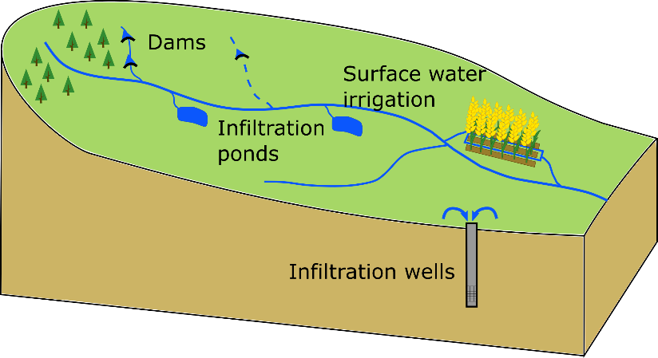

The slower surface water moves, the greater the potential for surface water to make its way to groundwater. While infrastructure or measures that slow or store surface water have a positive effect on groundwater availability, they also make groundwater more vulnerable to any contaminants present in the surface water.
Examples of measures that slow or retain surface water include (check) dams, infiltration ponds or reservoirs, irrigation channels and other channel modifications.
